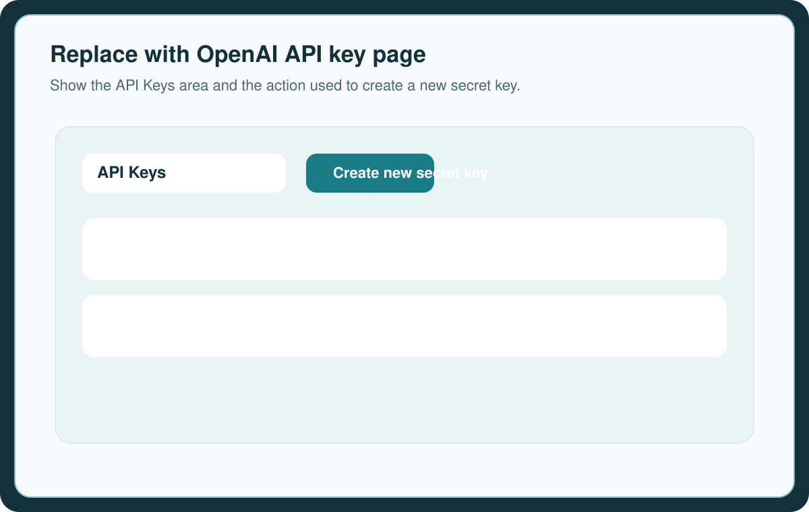
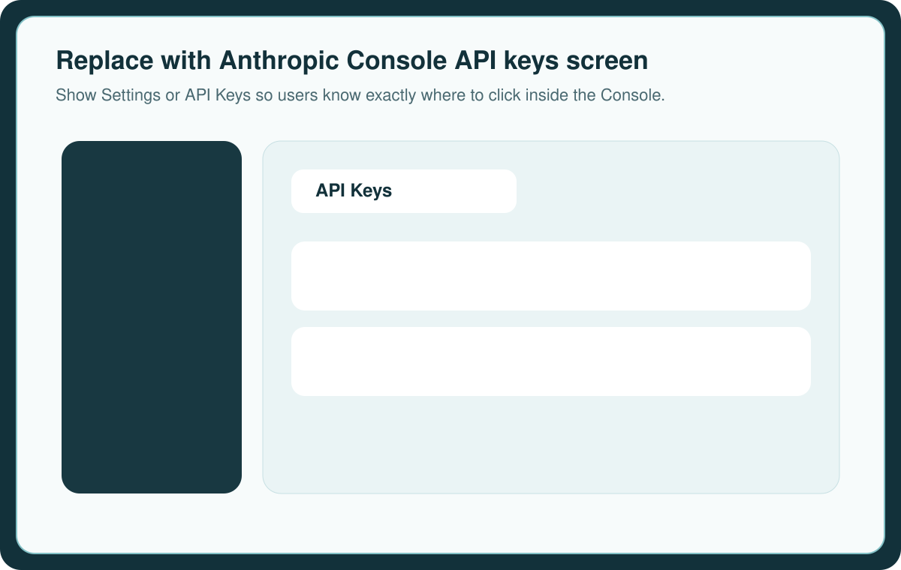
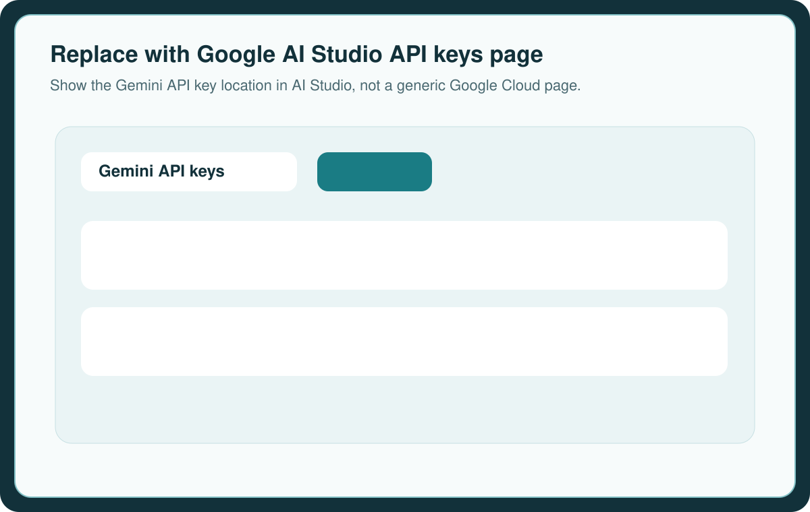
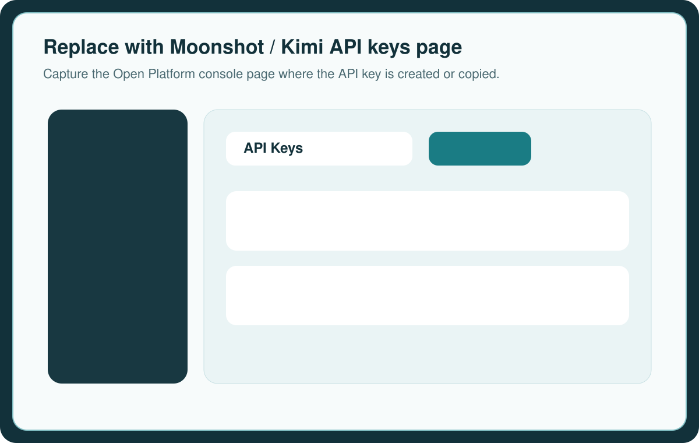

Setup guide
Get your AI provider keys.
Lakeview Lister currently exposes OpenAI, Anthropic, Google Gemini, and Moonshot in the Profile screen. You only need one provider to get started, but you can add more than one and test them inside the app.
Same pattern every time
- Create or sign in to the provider account.
- Open the provider’s API keys or developer settings area.
- Create the key and copy it immediately if the portal only shows it once.
- Paste it into Lakeview Lister Profile and click Test Key.
Before you start
You only need one provider to begin. Once one key is connected and tested, Lakeview Lister is ready for Draft Builder and Fast ID.
OpenAI
- Sign in to the OpenAI Developer Platform.
- Open the API key area for the project you want to use.
- Create a new secret key and copy it to a safe place.
- Paste it into OpenAI API Key in Lakeview Lister, then click Test Key.
If you organize work by project, use a dedicated key for Lakeview Lister so usage and permissions stay separated.

Anthropic
- Sign in to the Anthropic Console.
- Open your settings and go to the API keys area.
- Create a key in the workspace you want to use for Lakeview Lister.
- Paste it into Anthropic API Key in the app and run Test Key.
Anthropic’s docs describe API access through the web Console and note that keys are managed from the Console settings area.

Google Gemini
- Sign in to Google AI Studio.
- Open the Gemini API key page.
- Create a new key or copy an existing one assigned to your account.
- Paste it into Google API Key in Lakeview Lister and click Test Key.
Google’s Gemini docs explicitly route API key creation through Google AI Studio.

Moonshot / Kimi
- Sign in to the Moonshot Open Platform.
- Open the console API keys page.
- Create an API key in the default project and copy it.
- Paste it into Moonshot API Key in Lakeview Lister and run Test Key.
Moonshot’s official Kimi API docs point users to the Open Platform console API keys page for key creation.

Inside Lakeview Lister
Open Profile, paste the key into the matching provider field, save if needed, then use the app’s built-in Test Key action before running Draft Builder or Fast ID.